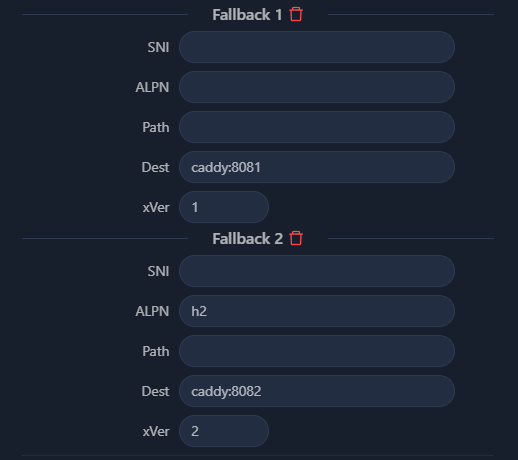

| kenyawest(Kenya-West) | Всем привет, почему не работает fallback на caddy на X-UI (XRay, VLESS+XTLS-Vision, свой домен)?
Когда захожу на свой (суб)домен по SSL без указания портов, сиречь на 443 порт, у меня ничего не загружается, хотя настроенный X-UI должен показывать ответ от caddy.
Оба в одной сети находятся:
caddy:
version: "3.8"
services:
caddy:
image: lucaslorentz/caddy-docker-proxy:ci-alpine
container_name: caddy
ports:
# портов нет! Он внутри сети работает и expose'ит что хочет только внутри, но конкретно тут 8081 и 8082
# ...
env_file:
- .env
networks:
- caddy-fallback
# ...
networks:
caddy-fallback:
external: true
X-UI:
---
version: "3.8"
services:
xui:
image: alireza7/x-ui
container_name: xui
ports:
- 80:80
- 443:443
- "${XUI_DASHBOARD_PORT}:${XUI_DASHBOARD_PORT}"
- "${XUI_WG_PORT}:${XUI_WG_PORT}/udp"
- "${XUI_VLESS_PORT}:${XUI_VLESS_PORT}"
- "${XUI_SS2022_PORT}:${XUI_SS2022_PORT}"
- "${XUI_SUB_PORT}:${XUI_SUB_PORT}"
env_file:
- .env
networks:
- caddy-fallback
# ...
networks:
caddy-fallback:
external: true
Конфиг Caddyfile:
# ...
:{$FALLBACK_PORT_1} {
import logging {$FALLBACK_PORT_1};
respond "Handled by Caddy 1" 200
}
:{$FALLBACK_PORT_2} {
import logging {$FALLBACK_PORT_2};
respond "Handled by Caddy 2" 200
}
Результирующий конфиг XRay:
{
"listen": null,
"port": XXXXX,
"protocol": "vless",
"settings": {
"clients": [
{
"email": "demouser@example.tld_vless",
"flow": "",
"id": "XXXX"
}
],
"decryption": "none",
"fallbacks": [
{
"alpn": "",
"dest": "caddy:8081",
"name": "",
"path": "",
"xver": 1
},
{
"alpn": "h2",
"dest": "caddy:8082",
"name": "",
"path": "",
"xver": 2
}
]
},
"sniffing": {
"destOverride": [
"http",
"tls",
"quic",
"fakedns"
],
"enabled": true,
"metadataOnly": false,
"routeOnly": false
},
"streamSettings": {
"network": "tcp",
"security": "tls",
"tcpSettings": {
"acceptProxyProtocol": false,
"header": {
"type": "none"
}
},
"tlsSettings": {
"alpn": [
"h2",
"http/1.1"
],
"certificates": [
{
"certificateFile": "/etc/letsencrypt/live/<DOMAIN>/fullchain.pem",
"keyFile": "/etc/letsencrypt/live/<DOMAIN>/privkey.pem",
"ocspStapling": 3600
}
],
"cipherSuites": "",
"maxVersion": "1.3",
"minVersion": "1.2",
"rejectUnknownSni": true,
"serverName": ""
}
},
"tag": "inbound-XXXXX"
}
И он вполне себе отвечает, если пингую из-под контейнера X-UI:
/app # wget -qO- caddy:8081
Handled by Caddy 1/app #
/app # wget -qO- caddy:8082
Handled by Caddy 2/app #
Так в чём дело? alpn пытался настраивать (h1, http/1.1, h2), dest тоже менял с 8081 на caddy:8081 и т. д.
Вот скриншот настроек VLESS:

Интересно, почему? За что мне всё это? Чем я это заслужил? Как теперь жить? Когда Дурова и Поднебесного отпустят? | 2024-08-27T15:38:01.996Z |